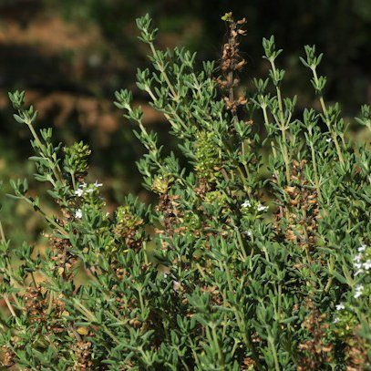

Tomillo
Hierba aromática mediterránea caracterizada por sus diminutas hojas y su sabor terroso y antiséptico. Contiene timol, un compuesto con potentes propiedades antimicrobianas.
Cómo hacer la infusión: Añade 1 cucharadita de tomillo seco o unas ramitas frescas a agua hirviendo. Deja reposar tapado durante 8 a 10 minutos.
Beneficios: Alivia afecciones respiratorias (tos, bronquitis, dolor de garganta), fortalece el sistema inmunológico y actúa como antiséptico natural.